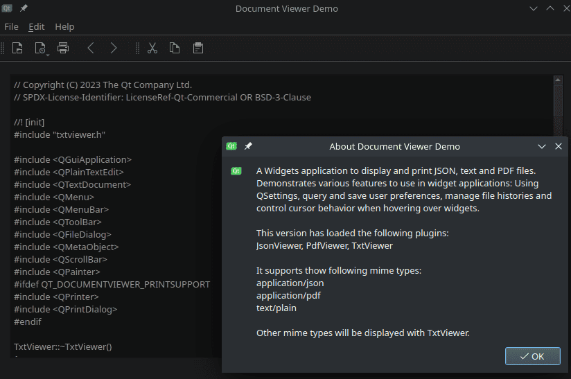

Qt Widgets - Text Viewer Plugin Example
A widget example with menus, toolbars and a status bar.
The Text Viewer example is a text editor built around QPlainTextEdit, in the form of a plugin for a general-purpose Document Viewer.

All of the code for the Text Viewer example is in the TxtViewer class, which inherits AbstractViewer. AbstractViewer provides the framework for interaction between a viewer and the main window. The application provides File, Edit, and Help entries in the menu bar.
The status bar at the bottom of the main window shows a message provided by the application to its user.
Recently opened files are shown in the File menu. The example can only load one file at a time.
Class Definition
class TxtViewer : public ViewerInterface { Q_OBJECT Q_PLUGIN_METADATA(IID "org.qt-project.Qt.Examples.DocumentViewer.ViewerInterface" FILE "txtviewer.json") Q_INTERFACES(ViewerInterface)
The class definition starts with the Q_OBJECT macro, which handles signals and slots. It is followed by the Q_PLUGIN_METADATA and Q_INTERFACES macros which are necessary to register the plugin.
The class inherits from ViewerInterface, which inherits from AbstractViewer. The ViewerInterface class is used to provide an interface between the main window application and the plugin.
QPluginLoader also requires the file txtviewer.json, which has to contain the plugin's key:
{ "Keys": [ "txtviewer" ] }
public:
TxtViewer();
~TxtViewer() override;
void init(QFile *file, QWidget *parent, QMainWindow *mainWindow) override;
QString viewerName() const override { return QLatin1StringView(staticMetaObject.className()); };
QStringList supportedMimeTypes() const override;
bool saveDocument() override { return saveFile(m_file.get()); };
bool saveDocumentAs() override;
bool hasContent() const override;
QByteArray saveState() const override { return {}; }
bool restoreState(QByteArray &) override { return true; }
bool supportsOverview() const override { return false; }
#ifdef QT_DOCUMENTVIEWER_PRINTSUPPORT
protected:
void printDocument(QPrinter *printer) const override;
#endif // QT_DOCUMENTVIEWER_PRINTSUPPORT
private slots:
void setupTxtUi();
private:
void openFile();
bool saveFile (QFile *file);
QPlainTextEdit *m_textEdit;
};
The class defines no constructor, which means that only a standard constructor without arguments is available. All other functions, including the destructor, re-implement virtual functions of ViewerInterface. They are used to exchange data, information, and instructions with the main application.
No functionality is implemented to save and restore settings. The supportsOverview function always returns false, which tells the main application that no window for thumbnail navigation has to be displayed.
TxtViewer Class Implementation
#include "txtviewer.h" #include <QFileDialog> #include <QMainWindow> #include <QMenu> #include <QMenuBar> #include <QPlainTextEdit> #include <QScrollBar> #include <QToolBar> #include <QGuiApplication> #include <QPainter> #include <QTextDocument> #include <QDir> #ifdef QT_DOCUMENTVIEWER_PRINTSUPPORT #include <QPrinter> #include <QPrintDialog> #endif using namespace Qt::StringLiterals; TxtViewer::TxtViewer() { connect(this, &AbstractViewer::uiInitialized, this, &TxtViewer::setupTxtUi); } TxtViewer::~TxtViewer() = default; void TxtViewer::init(QFile *file, QWidget *parent, QMainWindow *mainWindow) { AbstractViewer::init(file, new QPlainTextEdit(parent), mainWindow); m_textEdit = qobject_cast<QPlainTextEdit *>(widget()); } QStringList TxtViewer::supportedMimeTypes() const { return {"text/plain"_L1}; } void TxtViewer::setupTxtUi() { QMenu *editMenu = addMenu(tr("&Edit")); QToolBar *editToolBar = addToolBar(tr("Edit")); #ifndef QT_NO_CLIPBOARD const QIcon cutIcon = QIcon::fromTheme("edit-cut"_L1, QIcon(":/demos/documentviewer/images/cut.png"_L1)); QAction *cutAct = new QAction(cutIcon, tr("Cu&t"), this); cutAct->setShortcuts(QKeySequence::Cut); cutAct->setStatusTip(tr("Cut the current selection's contents to the " "clipboard")); connect(cutAct, &QAction::triggered, m_textEdit, &QPlainTextEdit::cut); editMenu->addAction(cutAct); editToolBar->addAction(cutAct); const QIcon copyIcon = QIcon::fromTheme("edit-copy"_L1, QIcon(":/demos/documentviewer/images/copy.png"_L1)); QAction *copyAct = new QAction(copyIcon, tr("&Copy"), this); copyAct->setShortcuts(QKeySequence::Copy); copyAct->setStatusTip(tr("Copy the current selection's contents to the " "clipboard")); connect(copyAct, &QAction::triggered, m_textEdit, &QPlainTextEdit::copy); editMenu->addAction(copyAct); editToolBar->addAction(copyAct); const QIcon pasteIcon = QIcon::fromTheme("edit-paste"_L1, QIcon(":/demos/documentviewer/images/paste.png"_L1)); QAction *pasteAct = new QAction(pasteIcon, tr("&Paste"), this); pasteAct->setShortcuts(QKeySequence::Paste); pasteAct->setStatusTip(tr("Paste the clipboard's contents into the current " "selection")); connect(pasteAct, &QAction::triggered, m_textEdit, &QPlainTextEdit::paste); editMenu->addAction(pasteAct); editToolBar->addAction(pasteAct); menuBar()->addSeparator(); cutAct->setEnabled(false); copyAct->setEnabled(false); connect(m_textEdit, &QPlainTextEdit::copyAvailable, cutAct, &QAction::setEnabled); connect(m_textEdit, &QPlainTextEdit::copyAvailable, copyAct, &QAction::setEnabled); #endif // !QT_NO_CLIPBOARD openFile(); connect(m_textEdit, &QPlainTextEdit::textChanged, this, [&](){ maybeSetPrintingEnabled(hasContent()); }); connect(m_uiAssets.back, &QAction::triggered, m_textEdit, [&](){ auto *bar = m_textEdit->verticalScrollBar(); if (bar->value() > bar->minimum()) bar->setValue(bar->value() - 1); }); connect(m_uiAssets.forward, &QAction::triggered, m_textEdit, [&](){ auto *bar = m_textEdit->verticalScrollBar(); if (bar->value() < bar->maximum()) bar->setValue(bar->value() + 1); }); }
We start by including the header files necessary to access all classes used by TxtViewer. We also include txtviewer.h.
QPrinter and QPrintDialog are only included if print support is enabled on the compilation system.
You might wonder why we don't include these headers in mainwindow.h and be done with it. The reason is that including multiple large headers from another header file can rapidly degrade performance. Here, it wouldn't do any harm, but it's still generally a good idea to include only the header files that are strictly necessary from another header file.
The implementation starts with an empty destructor. It could be completely omitted. It's good practice to implement it empty in order to point out to code readers that nothing needs to be done in the destructor.
The destructor is followed by an initialization function, taking three arguments:
file, the pointer to the file to be opened and displayed.parent, pointing to theQWidgetinside which the editor shall be placed.mainWindow, pointing to the application's main window, where menus and menu bars are handled.
The function calls the base init function of AbstractViwer. A new QPlainTextEdit widget is created, which will display the file's contents. Then, TxtViewer's setup function is connected to the base class' uiInitialized signal.
The next function returns the list of mime types, which the text viewer supports. Only plain text is supported.
The last initialization function adds viewer specific UI components like menus, icons, buttons, and tooltips. It uses functionality provided by AbstractViewer to make sure that these components are removed from the application's main window, once another file is displayed with another viewer plugin.
void TxtViewer::openFile() { const QString type = tr("open"); if (!m_file->open(QFile::ReadOnly | QFile::Text)) { statusMessage(tr("Cannot read file %1:\n%2.") .arg(QDir::toNativeSeparators(m_file->fileName()), m_file->errorString()), type); return; } QTextStream in(m_file.get()); #ifndef QT_NO_CURSOR QGuiApplication::setOverrideCursor(Qt::WaitCursor); #endif if (!m_textEdit->toPlainText().isEmpty()) { m_textEdit->clear(); disablePrinting(); } m_textEdit->setPlainText(in.readAll()); #ifndef QT_NO_CURSOR QGuiApplication::restoreOverrideCursor(); #endif statusMessage(tr("File %1 loaded.") .arg(QDir::toNativeSeparators(m_file->fileName())), type); maybeEnablePrinting(); }
openFile opens a file, transfers its contents into the QPlainTextEdit, and prints a status message for the user, depending on whether or not the opening was successful.
bool TxtViewer::hasContent() const { return (!m_textEdit->toPlainText().isEmpty()); } #ifdef QT_DOCUMENTVIEWER_PRINTSUPPORT void TxtViewer::printDocument(QPrinter *printer) const { if (!hasContent()) return; m_textEdit->print(printer); } #endif // QT_DOCUMENTVIEWER_PRINTSUPPORT bool TxtViewer::saveFile(QFile *file) { QString errorMessage; QGuiApplication::setOverrideCursor(Qt::WaitCursor); if (file->open(QFile::WriteOnly | QFile::Text)) { QTextStream out(file); out << m_textEdit->toPlainText(); } else { errorMessage = tr("Cannot open file %1 for writing:\n%2.") .arg(QDir::toNativeSeparators(file->fileName())), file->errorString(); } QGuiApplication::restoreOverrideCursor(); if (!errorMessage.isEmpty()) { statusMessage(errorMessage); return false; } statusMessage(tr("File %1 saved") .arg(QDir::toNativeSeparators(file->fileName()))); return true; } bool TxtViewer::saveDocumentAs() { QFileDialog dialog(mainWindow()); dialog.setWindowModality(Qt::WindowModal); dialog.setAcceptMode(QFileDialog::AcceptSave); if (dialog.exec() != QDialog::Accepted) return false; const QStringList &files = dialog.selectedFiles(); if (files.isEmpty()) return false; //newFile(); m_file->setFileName(files.first()); return saveDocument(); }
The next re-implemented function tells the main application whether or not the viewer plugin is actually displaying content.
If printing is supported on the compiling system, the next section implements it.
The last two re-implementations provide functionality to save the current file or to save it under a new name.